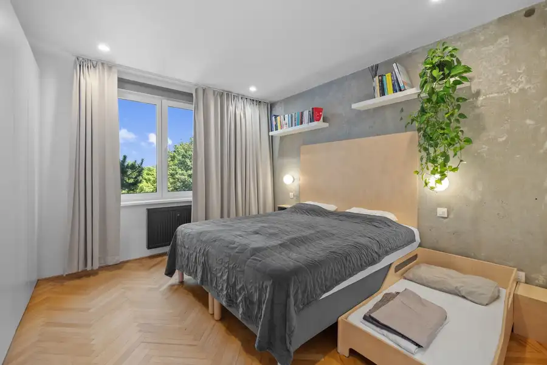
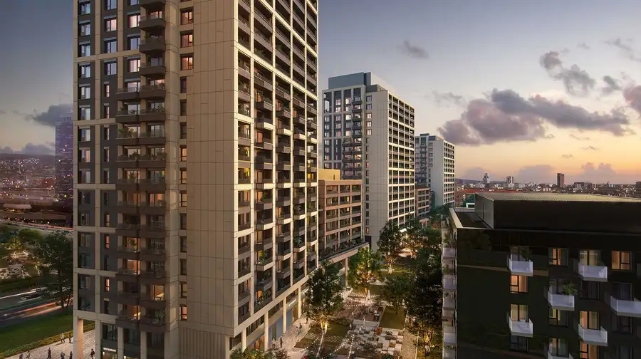

RUSOVCE - 6i rodinný dom s altánkom a priestrannou záhradou
Rusovce, Bratislava
- Dispozícia6-izbový
- Plocha407 m²
- Vlastníctvoosobné
O nehnuteľnosti
Realitná kancelária Nuera Vám ponúka na predaj nadštandardný rodinný dom v Rusovciach nachádzajúci sa v slepej tichej uličke. Celková výmera pozemku v osobnom vlastníctve je 652 m2 + 418 m2 je v dlhodobom prenájme od mestskej časti.
Podlahová plocha domu kolaudovaného v roku 2007 je 407 m2. Dvojpodlažný rodinný dom ponúkne svojmu novému majiteľovi priestranné miestnosti, ideálnu dispozíciu, garáž s priamym prechodom do domu a rozľahlú udržiavanú záhradu. Na spodnom podlaží sa nachádza - vstupná hala so samostatnou toaletou, technická miestnosť, obývacia izba s krbom , jedáleň, samostatná kuchyňa, 2 veľké spálne pričom každá má príručnú kúpeľňu a spoločný šatník. Zo všetkých miestností na spodnom podlaží je prístup do záhrady s terasou, altánkom a priestorom pre deti.
Na hornom podlaží sa nachádza otvorená knižnica s pracovným kútom, 3 spálne so šatníkmi, najväčšia kúpeľňa a samostatný šatník s množstvom úložného priestoru. Pri stavbe rodinného domu boli použité kvalitné materiály. Vzhľadom k veľkosti domu Vás potešia nízke mesačné prevádzkové náklady vo výške cca 200eur.
Rusovce sú výbornou voľbou pre bývanie v rodinnom dome vďake svojej bezproblémovej dostupnosti do centra mesta po diaľničnom obchvate. Zároveň svojim obyvateľom Rusovce poskytnú komfort bývania v blízkosti prírody a zároveň všetky potrebné služby občianskeho vybavenia.
Cenu nehnuteľnosti a bližšie informácie Vám poskytneme v RK.
Parametre
| Rozloha pozemku | 652 m² |
|---|---|
| Zastavaná plocha | 652 m² |
| Celková rozloha | 652 m² |
| Úžitková plocha | 407 m² |
| Poschodie | neuvedené |
| Počet poschodí | 2 |
| Počet izieb | 6 |
| Vlastníctvo | osobné |
| Odvoz odpadu | áno |
| Voda | verejný vodovod |
| El. napätie | 230V |
| Plyn | áno |
| Kanalizácia | áno |
| Kúpeľňa | áno |
| Balkón | áno - 1 |
| Terasa | áno |
| Pivnica | nie |
| Garáž | áno |
| Parkovanie | vnútorné |
| Inžinierske siete | áno |
| Postavené z | tehla |
| Zariadenie | zariadený |
| Zateplený objekt | áno |
| Krb | áno |
| Energetický certifikát | áno |
| Bezbariérový prístup | áno |
| Terén | rovina |
| Prístupová cesta | betónová cesta |
| Novostavba | áno |
| Dátum zverejnenia | 8. 5. 2026 |
Kde to je
Mohlo by Vás zaujímať

Byt10 285 000 €Zrekonštruovaný 3 izbový byt na ulici Haburská, Bratislava Ružinov, Bratislava 3-izbový67.4 m²3. podlažie Realitná kancelária NUERA ponúka na predaj výnimočný 3-izbový byt po kompletnej rekonštrukcii, ktorý zaujme kvalitným spracovaním, premyslenými…
Byt8 239 000 €DOWNTOWN YARDS - 1izbový apartmán s výhľadom na sever, Blok E Nivy, Bratislava 2-izbový34.03 m²3. podlažie Hľadáte spojenie mestskej dynamiky a absolútneho pokoja? Ponúkame na predaj štýlový a funkčne riešený 1- izbový byt v prestížnom projekte Downtown…